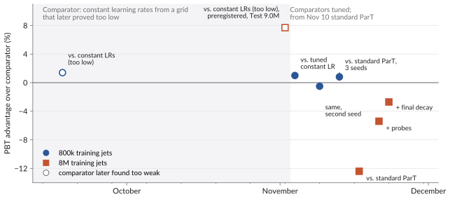
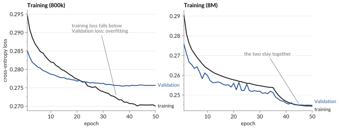
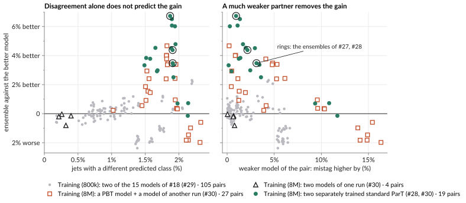

PBT for ParT jet-flavour tagging: report on all trials, July–November 2026
1 Research summary
- Objective
- Find out whether Population Based Training (PBT), which adapts the learning rate (LR) during fine-tuning, gives a better b / c / light-jet tagger than the standard training of the pretrained Particle Transformer (ParT), at the same compute (five models, 50 epochs).
- Main findings
- ConfirmedThe early PBT gains (1.4% with 800k training jets, 7.7% with 8M on Test 9.0M) were measured against constant LRs that were too low; a tuned constant LR is as good as PBT.
- Confirmed800k training jets: PBT is 0.81% better than standard ParT (3 seeds, 95% interval 0.34–1.34%).
- Preliminary8M training jets: PBT is 12.4% worse than standard ParT; 2.7% worse with two modifications (1 seed).
- Confirmed8M training jets: the ensemble of two standard ParT models is 5.0% better than the better single model (3 seeds, interval 4.2–5.8%).
- Conclusion
- As implemented, PBT improves the tagger only with the small training sample and by less than 1%. With 8M training jets standard ParT is better than PBT, and the largest gain found is from averaging two standard ParT models.

Samples. Training (800k): 2,392,232 jets. Training (8M): 23,921,449 jets. Validation (150k), until 9 November, and Validation (1M), from 10 November: evaluated after every epoch; they drive PBT and select the model. Test (2.8M): 2,825,125 jets, one evaluation per selected model. Test (9.0M): 8,970,477 jets, used once (#10). Mistag: geometric mean of the background mistag rates at eight working points (b-tag 80% and 90% against c and light; c-tag 50% and 80% against b and light); lower is better. Intervals resample blocks of 100 adjacent Test jets and cover the Test sample only, not seed-to-seed variation.
2 Experiment history
All trials in time order (dates in JST), grouped into phases. The number before each date is the trial number of the experiment log, which lists the runs, GPU time and configuration files of each trial. Results are on Test (2.8M) unless marked Validation. Figure 2 shows how the measured PBT advantage changed across the phases.

Set-up
First implementation.
| Date | Configuration | Result | Interpretation |
|---|---|---|---|
| Jul 22 – Aug 31 | First PBT versions (exploit-and-mutate, anchor-copy) and LR controllers; older training set-up (samples per epoch capped, damped optimizer start) | Two defects found and fixed: BatchNorm not frozen; a controller overwrote the PBT LR | Not comparable with later trials; training rebuilt as deterministic full epochs (Sep 16) |
2.1 PBT against constant learning rates
Training (800k), Validation (150k), seed 12345 unless noted. From here all trials start from the same pretrained checkpoint and train 50 epochs with five models.
| Date | Configuration | Result | Interpretation |
|---|---|---|---|
| #1Sep 16 | Constant LR, 5 values 3×10−6–1.4×10−5 | 0.3269; best at the highest LR | Reference for PBT. The best model at the edge of the grid was not followed up at the time |
| #2Sep 17–18 | The 1.4 and 0.85×10−5 models of #1 continued to 100 epochs | 0.3156 | Longer training helps |
| #3Sep 18 | PBT: start as #1; every 5 epochs the weakest copies the best, LR ×0.8 or ×1.2, max 3×10−5 | 0.3225; 1.4% better than #1 | Apparent PBT gain (later found to be an LR-level effect, #12–#14) |
| #4Sep 19 | PBT as #3, 100 epochs | 0.3111; 1.4% better than #2 | Same apparent gain at 100 epochs |
| #5Sep 20 | Rule-based LR controller in observe-only mode on a 60k subset of Validation; 8 models, 96 short epochs | Subset ranks models like the full set (Spearman 0.96) but detects an improvement in only 72% of cases; the controller proposed almost no changes | Not pursued |
| #6Sep 23–29 | PBT with decisions every epoch against every 5 epochs; seeds 12345 and 22345 | Every epoch 0.47% and 0.13% worse on Test; better on Validation | Inconclusive: Validation and Test disagree at this level |
| #7Sep 28 | Restart test: one epoch run as five restarted parts | Weights differ (max 7.6×10−4) | Decisions within an epoch impossible: the optimizer (Lookahead) state is not saved |
| #8Oct 12 | First Test (2.8M) evaluation of the selected models of #1–#6 | Test 0.010–0.019 lower than Validation; rank correlation 0.70 | Differences of about 0.3% reorder: Validation (150k) resolves them poorly |
| #9Oct 13 | Training (8M) and Test (9.0M) prepared; one-epoch GPU check | Ready | |
| #10Oct 14–21, Test Nov 2 | Preregistered on Training (8M): constant LR as #1 against PBT as #3; Test (9.0M) opened once | 0.2375 against 0.2572: PBT 7.7% better; all 10 validity checks passed | Best constant model again at the highest LR and PBT above the grid: cannot separate adaptation from LR level |
| #11Oct 17 – Nov 3 | Checkpoints with the full optimizer state, for decisions within an epoch | One epoch = five restarted parts, bit for bit | Implemented; not used in any PBT run |
2.2 Higher constant learning rates
Changed: the constant-LR grid moved upwards, then a faster PBT. Training (800k), Validation (150k).
| Date | Configuration | Result | Interpretation |
|---|---|---|---|
| #12Nov 3 | Constant LR 1.4×10−5–3×10−5 | 0.3146; best again at the highest LR | Grid still too low |
| #13Nov 3–4 | Constant LR 3×10−5–8×10−5 | 0.3018; best at 8×10−5 | Better than every PBT run of #3–#6: the early PBT gains came from the LR level |
| #14Nov 4 | Constant LR 8×10−5–3.2×10−4 | 0.3033; best at 1.2×10−4 | Optimum near 8×10−5–1.2×10−4 |
| #15Nov 4 | Fast PBT: start 10−5–3.5×10−4; every 2 epochs from epoch 4, LR ×0.5 or ×2, bounds 5×10−6–5×10−4 | 0.3003; 1.0% better than #14 | PBT about equal to the best constant LR |
| #16Nov 9 | #15 and constant LR 6×10−5–1.6×10−4, seed 22345 | 0.3041 against 0.3027: PBT 0.5% worse, although 1.4% better on Validation | Sign reverses; selection noise (~0.5%) as large as the effect |
| #17Nov 9 | #15 with fallback copies (×0.7 or ×1.4 when ×0.5 and ×2 are both in use) | 0.3026; 0.8% worse than #15 | No improvement. Consequence: Validation (1M), standard ParT as comparator, three seeds |
2.3 PBT against standard ParT, 800k
Changed: Validation (1M) instead of 150k; comparator standard ParT (constant LR for 35 epochs, then ×0.01 over 15; five start LRs); three seeds. Training (800k).
| Date | Configuration | Result | Interpretation |
|---|---|---|---|
| #18Nov 10–13 | Standard ParT (start 10−5–10−3), constant LR 6×10−5–1.6×10−4 and PBT as #17; seeds 12345, 22345, 32345 | Standard 0.3029 / 0.3038 / 0.3024; constant 0.3028 / 0.3013 / 0.3024; PBT 0.3008 / 0.3012 / 0.2996. PBT 0.81% better (95% interval 0.34–1.34%), at 7 of 8 working points | Small but consistent PBT gain; the constant-LR grid is not stable across seeds |
| #19Nov 12 | PBT as #18 with a final LR decay (no decisions in the last 15 epochs); 2 seeds | Same selected models as #18 | The decay adds nothing at 800k |
| #20Nov 12 | Standard ParT from random weights | 0.378 on Validation, against about 0.30 | Pretraining is essential |
| #21Nov 12 | Weight averages of nearby checkpoints and of PBT models | No gain (Validation) |
2.4 PBT against standard ParT, 8M
Changed: Training (8M) instead of 800k; one seed (12345). Validation (1M).
| Date | Configuration | Result | Interpretation |
|---|---|---|---|
| #22Nov 14–15 | Standard ParT, start 10−5–10−3 | 0.1635; best at the highest start LR (10−3) | Start LR range extended (#24) |
| #23Nov 15–17 | PBT as #18 with the LR range of standard ParT (max 10−3) | 0.1812; 12.4% worse than #24 | PBT lowered all LRs early (below 2.5×10−4 from epoch 11); hypothesis: two-epoch decision horizon |
| #24Nov 19–20 | Standard ParT, start 3×10−3 (one model, fixed in advance) | 0.1611 | 8M reference |
| #25Nov 19–21 | PBT with cool-down probes: each model judged on a copy trained ¼ epoch at 0.1× its LR; also on 800k | 8M: 0.1699, 5.4% worse than #24. 800k: 0.3024 (no change) | LRs stay higher (1.2×10−4–10−3); gap halved |
| #26Nov 20–23 | Probes plus the final decay of standard ParT; max LR 3×10−3 | 0.1655; 2.7% worse than #24 | 78% of the gap closed; still worse. Extra seeds not run (rule fixed in advance) |
2.5 Ensembles and other ways to gain, 8M
Changed: question moved from the LR schedule to combining models. Training (8M), Validation (1M).
| Date | Configuration | Result | Interpretation |
|---|---|---|---|
| #27Nov 23 | Ensemble: mean class probabilities of #22 and #24; chosen among 8 ensembles on Validation, Test check fixed in advance | 0.1530; 5.05% better than #24 (interval 3.75–6.36%) | Large gain on the development seed |
| #28Nov 23–25 | #27 repeated: new standard ParT runs at 3×10−3 and 10−3, seeds 22345 and 32345 | 4.86% and 5.14% better; mean of 3 seeds 5.01% (interval 4.17–5.84%) | Confirmed on new seeds |
| #29Nov 23 | Ensembles of any two of 15 models of #18 (800k) | No gain beyond chance (Validation) | Models too similar at 800k |
| #30Nov 23–25 | Disagreement and gain of model pairs, all 8M models | Same run or PBT pair: 0.2–0.4% disagreement, no gain; separate models: 1.5–2.3%; same LR 3.6%, different LR 4.7% gain (Validation) | Gain comes mostly from separate training |
| #31Nov 23–24 | Final decay of #24 without dropout | 0.1730 against 0.1595 at epoch 44 (Validation); stopped | Dropout helps at 8M although there is no visible overfitting |
| #32Nov 24 | Distillation: final decay of #24 trained half on labels, half on the ensemble of #27 | Best 0.1600 against 0.1584 (Validation) | No gain; the ensemble gain is not kept in one model |
| #33Nov 24–25 | Standard ParT, start 10−2 | 0.1631 on Validation (worse than #24); 0.1599 on Test | Start LR above 10−3 hardly matters; #24 stays the reference |
3 Interpretation of results
3.1 Baseline correction Confirmed
The early comparisons (#1–#10) used constant LRs of 3×10−6–1.4×10−5, and their best model was always at the top of the grid. With higher constant LRs the mistag falls steeply up to about 10−4, and both PBT runs lie on this curve (Figure 3). The early gains therefore measured the LR level that PBT reached, not the benefit of adapting the LR. With the 150k Validation sample, differences of about 0.5% were within selection noise (#6, #8, #16), which is why later trials select on Validation (1M).

3.2 Dataset-size dependence Confirmed observation Hypothesis for the cause
Observation: with 800k training jets the training loss falls below the Validation loss after about 20 epochs (0.270 against 0.276 at the end); with 8M training jets the two stay together (0.2443 and 0.2448; Figure 4). Hypothesis: when the model overfits, lowering the LR at the right time and keeping the best epoch is the right strategy, and PBT finds it (#18); without overfitting, a long phase at a high LR followed by a decay is better, which is standard ParT (#22–#24).

3.3 Training dynamics at 8M Preliminary, 1 seed Hypothesis for the cause
Observation: standard ParT keeps 3×10−3 for 35 epochs and gains most in its final decay; PBT lowers all LRs below 2.5×10−4 from epoch 11, leads for about 20 epochs and is then overtaken (Figure 5). Hypothesis: PBT compares its models two epochs after each decision, and over two epochs a lower LR almost always looks better. Probes and a final decay (#25, #26) partly address this and close 78% of the gap.

3.4 Ensembles Confirmed gain Hypothesis for the cause
Observation: the ensemble of the two standard ParT models of a seed is better on all three seeds (#27, #28; Figure 6, left). Models of one PBT run, or checkpoints of one run, disagree on 0.2–0.4% of the jets and give no gain; separately trained 8M models disagree on 1.5–2.3% (#30); 800k models on 0.6–0.7%, with no gain (#29). Hypothesis: the ensemble needs models that make different errors; PBT copies weights between its models, and at 800k the low LRs keep all models close to the common pretrained start. The gain was not kept in one model (#32).

4 Current status
Established
- The early gains of PBT were an LR-level effect (#12–#14).
- 800k: PBT 0.81% better than standard ParT; 3 seeds.
- 8M: ensemble of two standard ParT models 5.0% better; 3 seeds.
- Pretraining is essential (#20); dropout helps at 8M (#31).
Unresolved
- 8M PBT result: one seed only.
- Cause of the 8M result (decision horizon) and of the ensemble gain (model diversity): not tested directly.
- Decision frequency (#6): inconclusive. Decisions within an epoch: implemented (#11), never run.
- All runs start from one pretrained checkpoint; Test (2.8M) was also inspected in diagnostics before November; no result carried into a physics analysis.